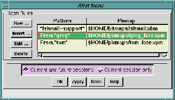
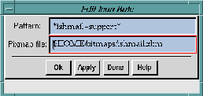

The
Icons ... option is similar to the
Alerts ... option in that it alerts
you when certain incoming mail arrives. Alert icons are
user-specified pixmaps that are displayed in place of the
standard
Ishmail mailbox icon when incoming mail arrives.
You specify a string pattern for each pixmap defined. When mail
arrives the headers are scanned for a match with the patterns.
When a match is detected the associated pixmap is displayed, if
Ishmail is iconified or if you have an icon box that displays the
Ishmail icon when the program is running.
To add or insert new alert icons, and to modify or delete existing
alert icons, click the
Icons ... option. The
Alert Icons window
appears.

The
Alert Icons window shows the list of current string patterns
and associated pixmaps in a box containing two text fields
- the
Pattern name field and the associated
Pixmap field. (If no alert icons
have been defined, both fields are empty.)
The pattern is evaluated as a
regular expression, as defined by
the UNIX
ed command.
You use the four buttons to the left of the text fields to:
- Create a new alert icon.
- Insert an alert icon.
- Edit an existing alert icon.
- Remove an existing alert icon.
When you click the
New ..., Insert ..., or
Edit ... buttons, the
Edit Icon
Rule window appears. It contains text fields in which you can
create or modify an alert icon.

To create a new alert icon:
- Click the
New ... button. The
Edit Icon
Rule window appears.
- Place the pointer in the
Pattern: text field and enter a
string pattern that would appear in the header field of an
incoming message.
- Place the pointer in the
Pixmap file: text field and enter the
name of the pixmap that should be invoked when the
string pattern is encountered in a message header.
- Click
Ok or
Apply in the
Edit Icon
Rule dialog window. The
new alert icon is added to the end of the alert icons
Pattern
list.
To insert an alert icon:
- Click the
Insert ... button. The
Edit Icon
Rule window appears.
- Place the pointer in the
Pattern: text field and enter a
string pattern that should appear in the header field of
an incoming message.
- Place the pointer in the
Pixmap file: text field and enter the
name of the pixmap that should be invoked when the
string pattern is encountered in a message header.
- Click
Ok or
Apply in the
Edit Icon
Rule dialog window. The
new alert icon is inserted before the selected alert icon in
the
Pattern list.
To
edit an alert icon:
- Select an alert icon in the
Pattern list, and click the
Edit ...
button or double-click the alert icon. The
Edit Alert Icon
window appears with the pattern and associated pixmap
file in the text fields.
- Make your modification(s) in the text fields.
- Click
Ok or
Apply in the
Edit Icon
Rule window to add your
changes to the selected alert icon in the
Pattern list.
To delete one or more alert icons:
- Select the alert icon(s) you want to remove.
- Click the
Delete ... button.
A pop-up confirmation box prompts you for confirmation
before completing the operation.
Apply or cancel your changes using the row of buttons across the
bottom of the window. See
Applying Your Changes.
Preceding Section: Alerts Option
Following Section: Save Patterns Option
Parent Section: Main Window Options Menu
Contents of Ishmail User's Guide